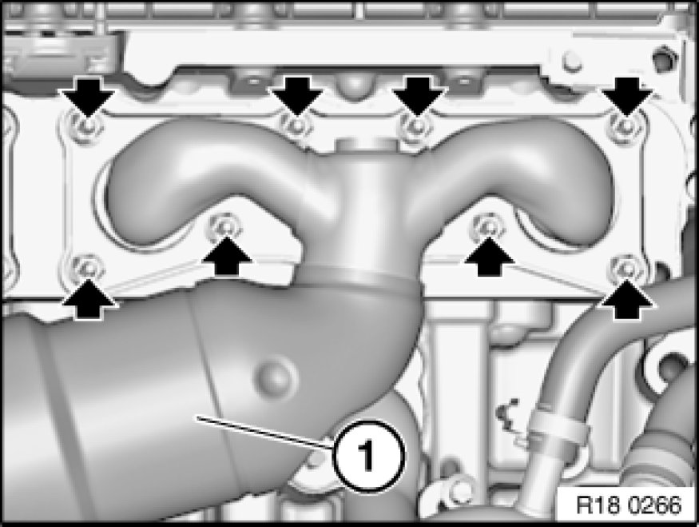

Removing and Installing/Replacing Front Exhaust Manifold
18 40 050 - Removing and installing/replacing front exhaust manifold (N52, N52K)

Necessary preliminary tasks:
- Remove rear exhaust manifold Removing and Installing/Replacing Rear Exhaust Manifold

Note:
The oxygen sensors are in danger of being damaged when the exhaust manifolds are removed and installed.
Remove control sensor from cylinders 1 to 3.
Remove monitor sensor from cylinders 1 to 3.

Unscrew nuts.
Remove exhaust manifold (1).
Installation:
Clean sealing faces and replace seals.
Replace nuts.
Tightening torque 18 40 1AZ 18 40 Exhaust Manifold.
Add final details to vehicle.
Check exhaust system for leaks.